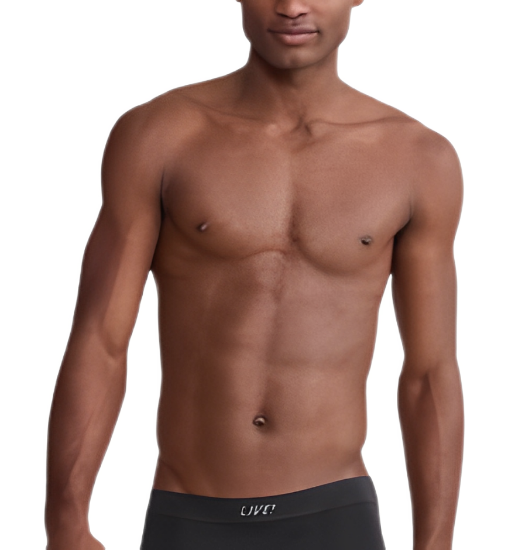
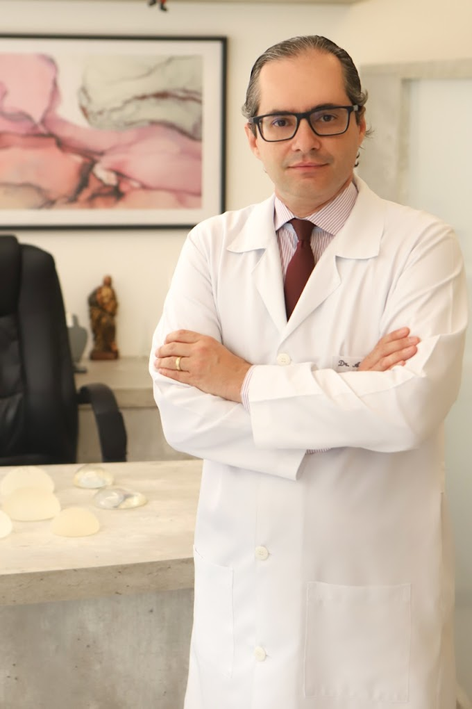
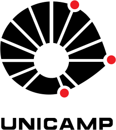

Especialista em mommy makeover, lipo HD e prótese de mama com recuperação rápida (R24R)
Conjunto de procedimentos estéticos personalizados para restaurar e valorizar o corpo após a gravidez, promovendo autoestima e bem-estar.
Com a técnica R24R, as próteses mamárias e glúteas garantem resultados harmônicos e naturais, com recuperação rápida e confortável.
Lipoaspiração de alta definição que esculpe os contornos corporais, proporcionando uma aparência atlética, elegante e tonificada.

Procedimentos como lipoaspiração, otoplastia e blefaroplastia que promovem harmonia facial e corporal de forma personalizada e segura.

CRM: 102016-SP / RQE Nº: 37923
Dr. André Reda é médico formado pela Faculdade de Medicina de
Catanduva – SP, onde também concluiu sua residência médica em
Cirurgia Geral. É especialista na área com reconhecimento do
Ministério da Educação (MEC), além de possuir sólida formação
em Cirurgia Plástica pela renomada instituição SOBRAPAR –
UNICAMP.
Com títulos conferidos pela Sociedade Brasileira de Cirurgia
Plástica e pelo Conselho Federal de Medicina, Dr. André é
Membro Especialista da SBCP e também integra importantes
entidades médicas, como a Associação Médica Brasileira e a
ISAPS (Sociedade Internacional de Cirurgia Plástica Estética),
o que reforça seu compromisso com os mais altos padrões da
medicina estética.
Atuando também como perito médico, Dr. André Reda alia
experiência, conhecimento técnico e constante atualização
científica para oferecer um atendimento ético, seguro e
centrado no bem-estar de seus pacientes.

As mais modernas técnicas cirúrgicas para resultados naturais e precisos, sempre com foco em menos cicatrizes e uma recuperação mais rápida.
Com o Dr. André Reda, a segurança do paciente é prioridade absoluta, com procedimentos realizados seguindo rigorosos padrões médicos e éticos.
A recuperação assistida com o Dr. André Reda garante cuidado individualizado no pós-operatório, promovendo conforto, segurança e resultados ainda mais satisfatórios.
Dr. André Reda é cirurgião plástico especializado, amplamente reconhecido em São José do Rio Preto por sua técnica precisa e sólida experiência. Atende pacientes de diversas cidades do interior paulista e de estados vizinhos, sempre com foco em excelência e cuidado individualizado.
"Fiz uma lipo completa + enxertia de glúteos, procurei o Dr André Reda pq tive ótimas recomendações, simplesmente superou minhas expectativas, ficou muito melhor do que eu imaginava. Médico muito atencioso, simpático, passa confiança/segurança . Excelente profissional, obrigada Dr André, por realizar meu sonho... 🙏"
~Suzane Pereira
"O Dr André é extremamente profissional e projeta em cada paciente o melhor resultado. Levei todas as minhas dúvidas, alinhamos a minha expectativa e estou muito feliz. Obrigada, Dr André! Você realiza sonhos!"
~Ana Paula Saud
"Fiz mastopexia redutora à 2 anos e 6 meses, com 45 anos, a melhor decisão da minha vida e a melhor escolha de profissional, Dr André é extremamente competente, honesto e educado, meu resultado ficou perfeito, tanto que posteriormente minha filha fez cirurgia com ele também, só que ela foi de implante de silicone, mas nós duas ficamos satisfeitas e felizes com o resultado. Espero poder fazer outras cirurgias com ele, super indico o Dr ANDRÉ"
~Rosângela Denegre
Você merece se olhar no espelho e se sentir bem com quem vê.
Aqui, cada detalhe da sua cirurgia é pensado com carinho, respeito e
segurança — desde a primeira conversa até o pós-operatório.
O doutor André Reda une técnica, experiência e sensibilidade para
realçar o que você tem de mais bonito: sua própria essência.
Esse pode ser o recomeço que você estava esperando.